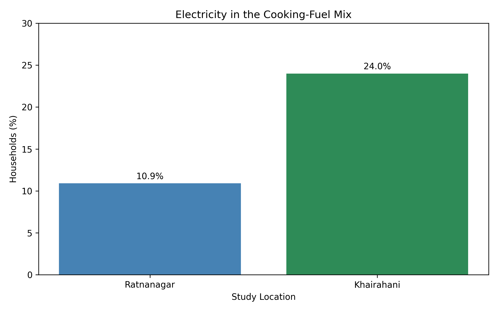
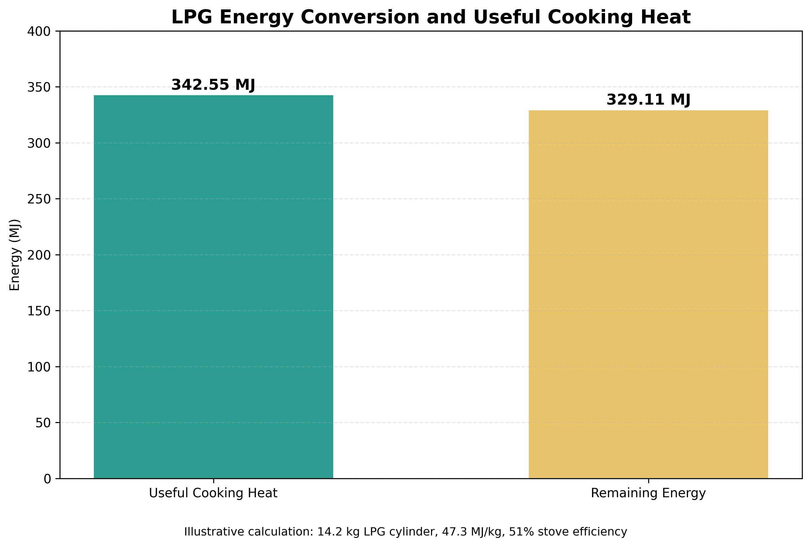
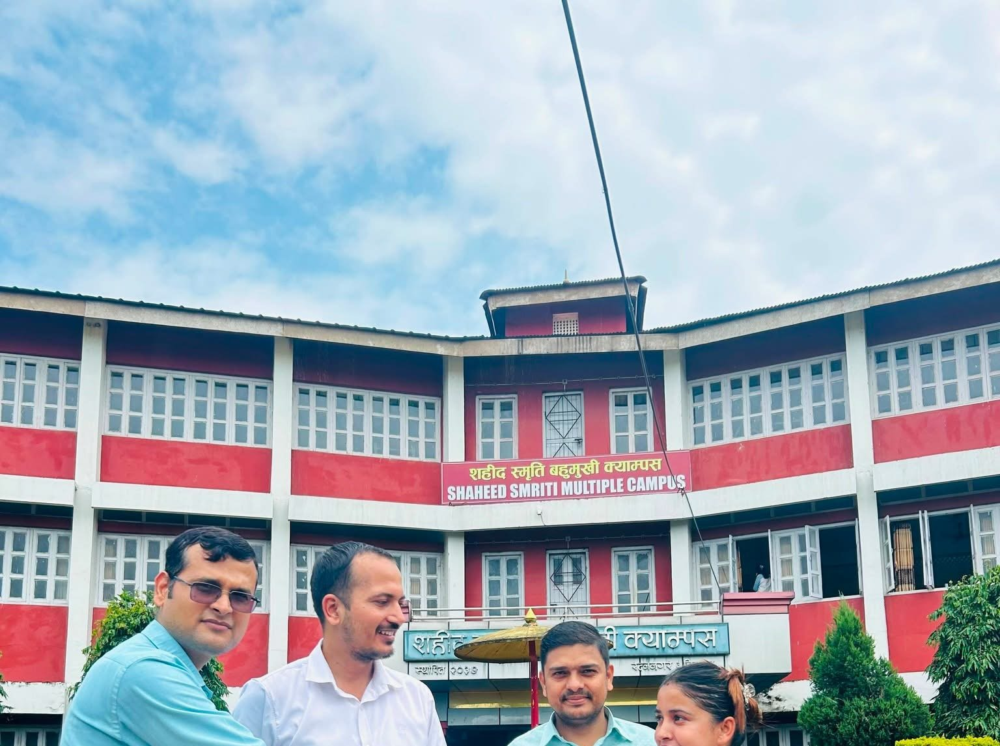

Exploring physics through data and discovery.
I'm Bandana Dhakal, a B.Sc. Physics graduate with interests in theoretical and computational physics, scientific computing, numerical modelling and sustainable energy research.

About me
I completed my B.Sc. in Physics at Shaheed Smriti Multiple Campus, Chitwan, under the Institute of Science and Technology (IOST), Tribhuvan University. I was the batch topper throughout the four-year B.Sc. Physics programme and received a full departmental merit scholarship. I also ranked first in the +2 Science programme, with a focus on Physics and Mathematics, and received a full scholarship. My academic interests include theoretical physics, computational science, quantitative analysis, and sustainable household energy research.
Led a field-based investigation of energy consumption in 201 households in Ratnanagar and Khairahani, Chitwan. The research examined the coexistence of LPG, firewood, electricity and solar energy, connecting thermodynamics and energy-conversion efficiency with household energy practices. Contributed to methodology, field investigation, statistical analysis, interpretation and manuscript preparation. Used Python-based computation to analyse survey data, estimate useful cooking energy and visualise patterns. The CV also describes logistic regression and sensitivity analysis. Related undergraduate thesis: Fuel Stacking and Electricity Use in Two Semi-Urban Settlements in Nepal. A peer-reviewed publication is not claimed here.Research & scientific inquiry
Comparative Assessment of Household Fuel Stacking, Useful Cooking Energy, and Household Energy Outcomes
Electricity Use in Household Cooking
Comparison of surveyed households reporting electricity in their cooking-fuel mix.

LPG Energy Conversion and Useful Cooking Heat
Illustrative calculation for a 14.2 kg LPG cylinder, using a calorific value of 47.3 MJ/kg and 51% stove efficiency.

Education
Bachelor of Science (B.Sc.) in Physics
Shaheed Smriti Multiple Campus, Chitwan · Institute of Science and Technology (IOST), Tribhuvan University. Ranked first in te BSC Physics programm in each year's final examination.
Higher Secondary Education (+2 Science)
Nepal Higher Secondary School, Chitwan · GPA 3.43 / 4.00 · First rank in the +2 Science programme.
Secondary Education Examination (SEE)
Ekata Shishu Niketan · GPA 3.50 / 4.00.
Scholarships & awards
Full departmental scholarship · B.Sc. Physics
Awarded by Shaheed Smriti Multiple Campus for ranking first in the B.Sc. department / Physics programme.
Full scholarship · +2 Science
Awarded by Nepal Higher Secondary School in recognition of academic excellence and first rank in the Science programme.

Technical skills
Programming
Python, R, MATLAB, SQL, C
Scientific computing
Numerical modelling, quantitative research, statistical analysis, data visualisation
Physics interests
Quantum physics, relativity, thermodynamics, mathematical and computational physics
Licences & certifications
Ultimate Job-Ready AI-Powered Data Analytics Course
Certificate of completion in AI-powered data analytics.
C Programming for Beginners
Certificate listed as C Language on LinkedIn.
Quantum Physics: An Overview of a Weird World (Basics)
Introductory quantum physics course; LinkedIn describes a 19-hour course.
Mathematical Intuition Behind Special and General Relativity
Course listed in LinkedIn licences and certifications.
For additional credentials and issuing dates, see the linked LinkedIn profile.
Research, collaboration & opportunities
Interested in scientific computing, computational physics, energy systems research or graduate study opportunities? Connect with me.